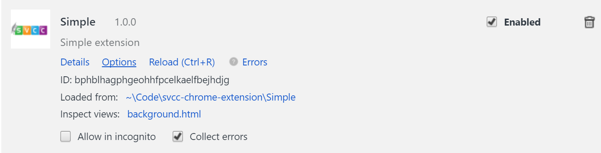

Building Chrome Extensions with React and Webpack
Silicon Valley Code Camp 2017
Guy Vider
Site: TravelingTechGuy.com
Github: github.com/TravelingTechGuy
LinkedIn: linkedin.com/in/gvider
Twitter: @TravelTechGuy
In this session we'll cover:
- What are Chrome extensions and why should you care? (3 minutes)
- How to create a basic Chrome extension (10 minutes)
- How to add React to the view parts, and how to use Webpack to package the extension (20 minutes)
- Tie it all togather into a functional extension (10 minutes)
- Q&A (time permitting)
To build and use the extensions in this repo, you'll need:
- A console application of your choosing
-
git - clone this repo:
git clone https://github.com/TravelingTechGuy/svcc-chrome-extension
Or you could just download the full zip at
https://github.com/TravelingTechGuy/svcc-chrome-extension/archive/master.zip - NodeJS and NPM - install from the NodeJS site
- Install Webpack globally using NPM:
npm i -g webpack
What are extensions?
Extensions are small software programs that can modify and enhance the functionality of the Chrome browser. You write them using web technologies such as HTML, JavaScript, and CSS. ... You can distribute your extension through the Chrome Web Store.
Simply put, extesnions are apps for your browser
Some examples:
-
uBlock Origin
Blocks ads and unwanted trackers
Alters page content and DOM -
HTTPS Everywhere
Attempts to switch to an HTTPS version of every site
Alters page url -
User Agent Switcher
Allows your Chrome to pass for other browsers/crawlers
Alters HTTP request header -
Shrtr
Shortens urls, using several shortening services
Copies url, changes nothing
And many more at the Chrome web store... all free!
Setup
-
In Chrome, go to Menu > More Tools > Extensions
Alternatively, typechrome://extensionsin the address bar - Check the Developer mode box
- You can now load unpacked extensions

Basic extension structure
manifest.json*
background.html
background.js
options.html
popup.html
--|_locales*
--|messages.json
--|icons*
--|icon16.png
--|icon19.png
--|icon48.png
--|icon128.png
Files marked with * are mandatory.
- A basic extension is a folder containing a manifest file, some messages and some icons.
- The extension can accsess only the files in its folder.
- Icons are not strictly mandatory, Chrome will just provide a generic icon
- To load your extension into Chrome, click the Load unpacked extension button, and point it to the folder containing the manifest file
Let's look at the manifest.json file
Extension parts:
- Manifest - tells Chrome all the essentials about the extension, assigns the various components and icons, and sets permissions and security.
- Messages - contain the extension's name and description. Provide I18N support.
- Icons - a place to hold all icons and images the extension needs.
- Popup page - will be shown when the extension icon is clicked [Not mandatory].
- Options page - allows settings management for the extension [Not mandatory].
- Background page - either an HTML or a Javascript file (or both) that run constantly in the background. Useful for carriying out async tasks, network operations and monitoring.
Once the extension loaded:
- We can see the manifest info
- While developing, check Collect errors (note that writing to the console will be grabbed as well)
- From here we can launch the options view (if available)
- We can also iunspect our background view
- Finally, we can remove the extension from Chrome
Reactive extension setup
- Install all NPM dependencies (let's look at
package.json) - Create our
webpack.config.jsfile - Support building for development and building for production
- Support multiple entry points - as needed by the extension
- Add support for
ESLintto prevent basic errors and maintain style (also.eslintrcfile) - Add support for
baeblfor the latest ES6 syntax - Add support for UglifyJS ans zipping for production
-
Add NPM scripts to build for development and production
Now we can runnpm run buildornpm run distto build the extension.
/